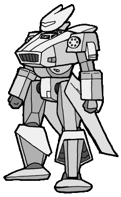

|  |
Vadel
42.0t Battroid MV:-2 TR:-2 SE:+1 Hnd:2 Mnt:2 Walk:51 Skim:95 Space Flight:94
In the seven decades of Vadel Incorporated's history there have been forty redesigns of the basic model. It has been a constant favorite of both military and arena pilots. In addition to mecha, Vadel Incorporated produces engines and thrust systems for other companies. It is widely believed that Vadel Incorporated is working on a new model to replace the current "AD-2x" series. The release of this version will likely coincide with the company's 70th anniversary in NT162. |
|
|
|